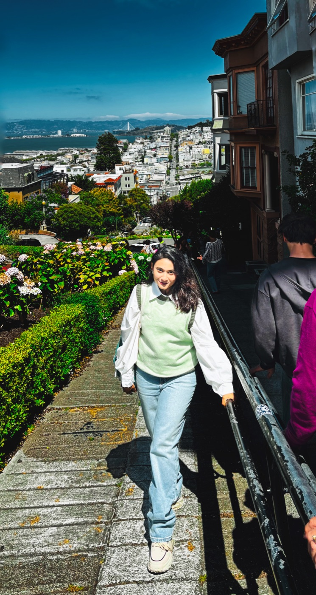

About
A little about me

From the clinic to public health
I'm an internationally trained dentist. I earned my BDS from Chittagong Medical College and completed a one-year clinical internship, then passed the INBDE and gained U.S. dental shadowing experience — all rooted in a commitment to evidence-based care.
Right now I volunteer in public health at UC Berkeley, and I've contributed to a peer-reviewed publication while building my skills in data analysis (R, Stata). I'm drawn to questions about oral-health outcomes and the disparities that shape them.
Above all, I'm driven toward a DDS — an advanced-standing program where I can deepen my clinical expertise and serve diverse patient populations. Outside the clinic, I photograph the moments I don't want to forget. This site is where those threads meet.